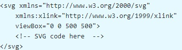

S V G SVG - Scalable Vector Graphic History
Since: 1999
Version 1.0: 2001 - 2011
Version 1.1: 2011 - now
Version 2.0: in developing
Functionality
1. Paths
2. Basic shapes
3. Text
4. Painting
5. Color
6. Scripting
and more...
SVG
File Structure
The minimal code could be like this.

SVG
Tegs
Teg - < g >
Teg - < use >
Important!!!
Teg - < path >
M / m (moveTo) : L / l (lineTo) : Z / z (closePath)
Example
Where to use?
This is where I end. Thanks for attention :)